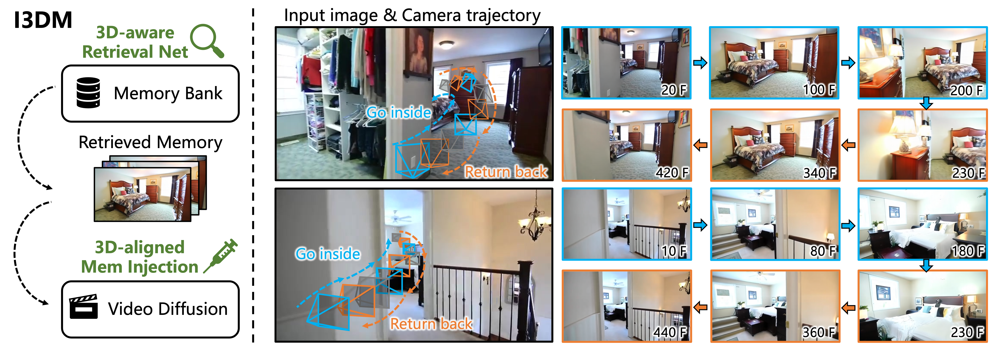
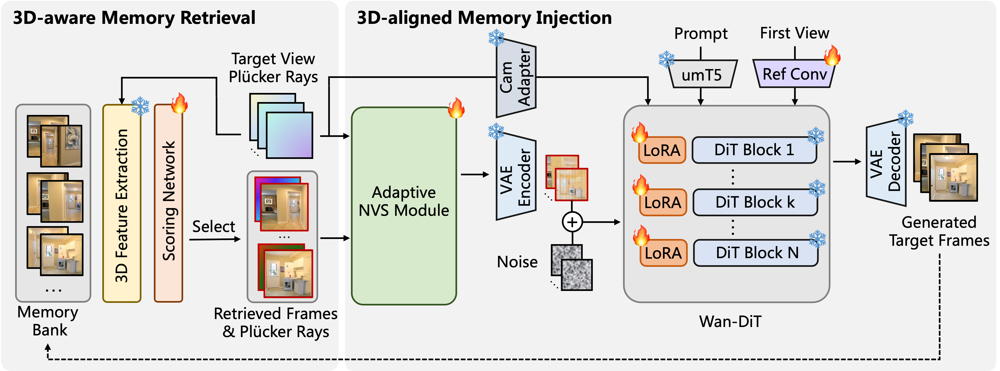

I3DM: Implicit 3D-aware Memory Retrieval and Injection
for Consistent Video Scene Generation
Arxiv, 2026
- 1Monash University
- 2Vertex Lab
- 3Shanghai Jiao Tong University
Abstract

Maintaining scene consistency when a generated video revisits an earlier viewpoint remains challenging. Existing solutions rely either on explicitly constructing 3D geometry, which suffers from error accumulation and scale ambiguity, or on naive camera Field-of-View (FoV) retrieval, which typically fails under complex occlusions. To overcome these limitations, we propose I3DM, a novel implicit 3D-aware memory mechanism for consistent video scene generation that bypasses explicit 3D reconstruction. At the core of our approach is a 3D-aware memory retrieval strategy, which leverages the intermediate features of a pre-trained Feed-Forward Novel View Synthesis (FF-NVS) model to score view relevance, enabling robust retrieval even in highly occluded scenarios. Furthermore, to fully utilize the retrieved historical frames, we introduce a 3D-aligned memory injection module. This module implicitly warps historical content to the target view and adaptively conditions the generation on reliable warping regions, leading to improved revisit consistency and accurate camera control.
Cycle-Trajectory Results
Motivation

Explicit geometry-based memory suffers from scale ambiguity and accumulated reconstruction errors, while Field-of-View retrieval can select irrelevant frames under occlusion. Both issues lead to inaccurate camera navigation and inconsistent revisits.
Method

I3DM first scores historical frames with 3D-aware features from a pre-trained NVS model and retrieves the views most relevant to the target camera. An Adaptive NVS Module then aligns the selected memory and injects reliable regions into the Wan-DiT backbone for consistent generation.
Comparing with Other Retrieval Methods
Results of Self-Captured Scenes
Citation
Acknowledgements
The website template was borrowed from BakedSDF.